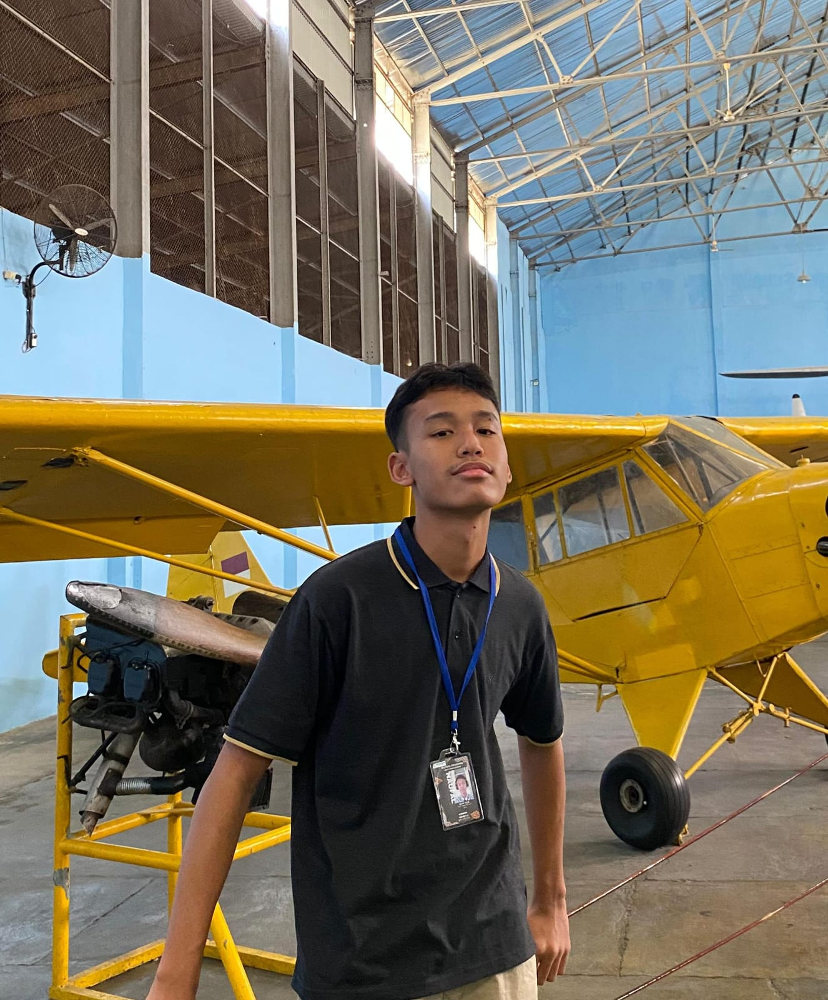

NAUFAL AMMAR AULIA
IX TIRMIDZI
ABOUT ME
Halo semua! Nama saya Naufal Ammar Aulia, kalian bisa panggil saya Naufal,
sebenarnya nama panggilan saya ada banyak sih, jadi kalian bisa bebas
panggil saya tapi yang ada unsur Naufal nya yaaa. Saya lahir di Bekasi
tanggal 07 Desember 2009, umur saya saat membuat web ini 15 tahun, dan
saya anak pertama dari 2 bersaudara. Hobi saya sih simpel aja, cuman
jalan-jalan sama main game buat healing dikit-dikit lah biar ga stres
mikirin tugas sekolah yang numpuk. Oiyaa, yang terakhir cita-cita saya menjadi seorang masinis kereta, tau sendiri lah yaaa kenapa saya pengen jadi masinis, hehee
PENCAPAIAN DI SMP
- Juara 2 Parade Defile HUT Pramuka Ke-63 Kab. Bekasi Tingkat Selang Sekar
- Juara Sajura Paskibra Harapan Perintis 3 Tingkat Pulau Jawa
- Anggota BEST Kementerian Wirausaha 2024/2025
- Anggota Pramuka Garuda Penggalang 2025
QUOTES
“Kegagalan adalah sebuah pelajaran yang berharga untuk kedepannya”
SEKOLAH LANJUTAN
SMAN 4 TAMBUN SELATAN